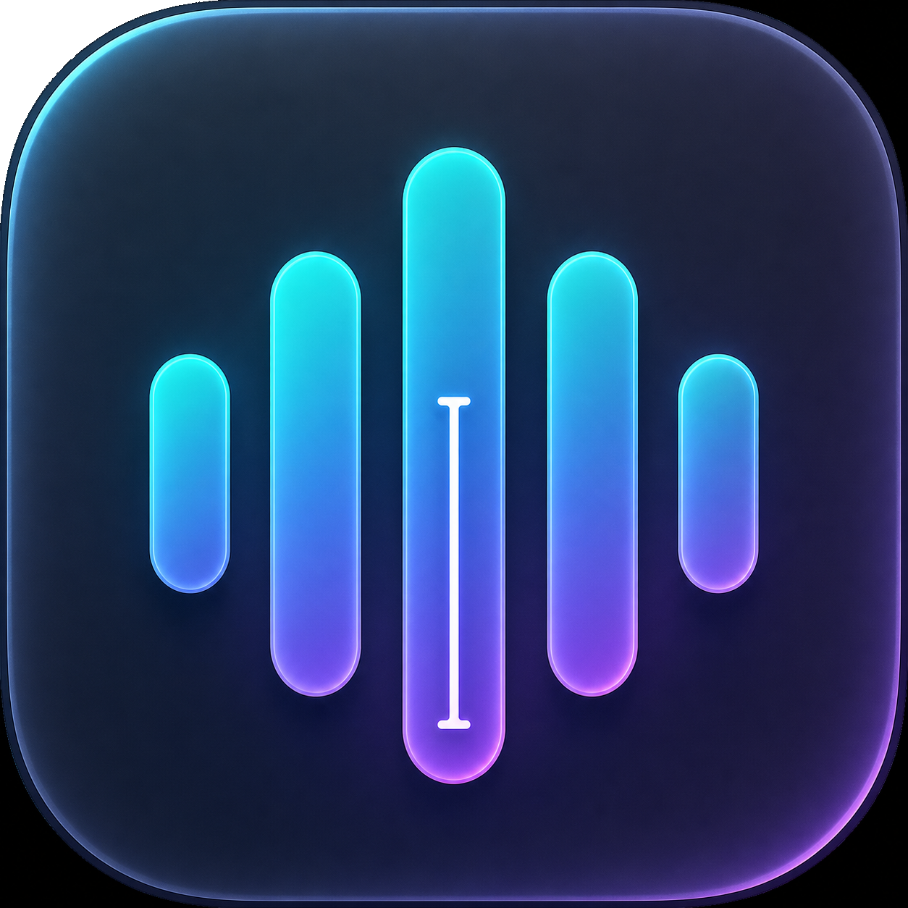

原生速度
Apple Speech 流式转录，真实 RMS 驱动波形。声音有多大，界面就有多鲜活。

VoiceInput按住右 Command，自然说话，松手即输入。VoiceInput 让中文、英文与技术术语顺畅落在任何光标之后。
让声音越过键盘，直接抵达光标。
01 / FLOW
VoiceInput 常驻菜单栏，却从不占据你的注意力。它只在你按住右 Command 时出现，松手后把文字送回原来的工作现场。
Apple Speech 流式转录，真实 RMS 驱动波形。声音有多大，界面就有多鲜活。
简体中文开箱即用，并可随时切换英语、繁中、日语与韩语。
可选的 OpenAI-compatible LLM 只修复明显误识别。正确的内容、语气和措辞保持原样。
02 / TRUST
输入法临时切换后自动恢复，剪贴板所有 item 与类型完整还原。无分析、无遥测；LLM 只有在你主动开启时才接收识别后的文本。
VOICE → TEXT